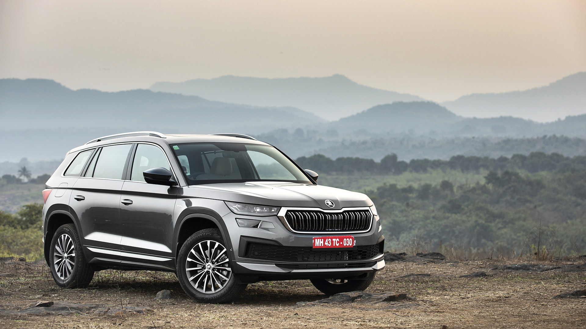

Kodiaq Specs, Features and Price
The Petrol engine is 1984 cc . It is available with Automatic transmission. Depending upon the variant and fuel type the Kodiaq has a mileage of 12.78 kmpl & Ground clearance of Kodiaq is 192mm. The Kodiaq is a 7 seater 4 cylinder car and has length of 4699mm, width of 1882mm and a wheelbase of 2791mm.